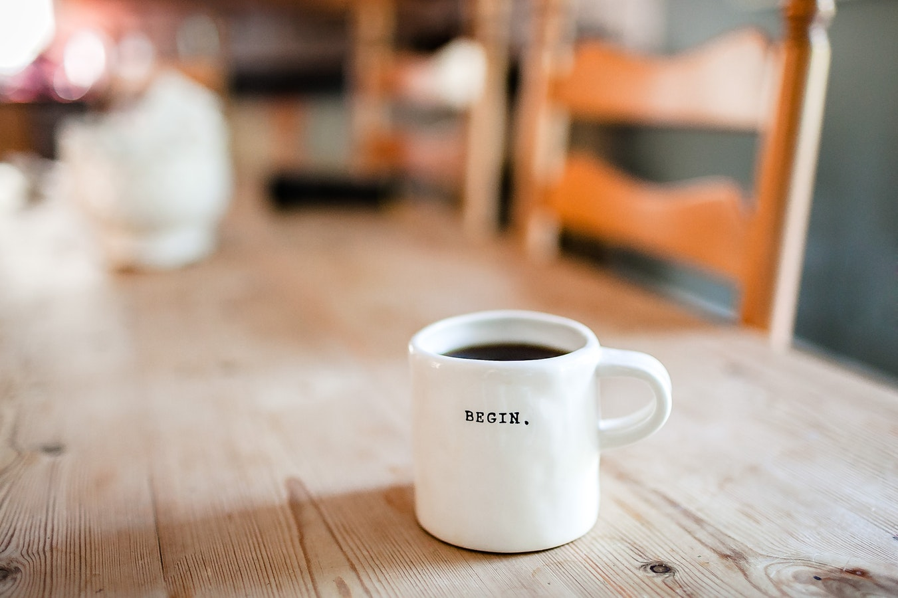

How to make the ~perfect~ pourover ☕
Want to make some good coffee, you say? You've come to the right place. Let's get started.
Step One: Gather the Materials
The materials you use to make coffee have a huge impact on the quality of your drink. Click on each item to learn more about it.
- Pourover contraption
- Filters
- Coffee beans
- Coffee grinder
- Gooseneck kettle
- Scale

Step Two: Preparation
Prepare to brew your coffee by boiling water in the kettle and grounding the desired amount of coffee beans. The coffee beans should typically be ground at a relatively fine setting for this process. You'll want a 16:1 ratio of water to beans, so keep that in mind. Place your filter inside the pourover contraption and place the contraption on the kitchen scale.
Step Three: Pour, pour, pour!
With the boiling water, rinse the filter in a circular motion. Empty the water from the carafe into the sink. This gets rid of any paper-y taste the filter might give the coffee. Then, fill a mug of choice with some of the boiling water. This keeps the cup (and the coffee, which will be added later,) warm.
Now, tare the scale. Place the coffee grounds on top of the filter. Normally 20g of grounds makes an average sized cup of coffee, but feel free to adjust this number depending on how many cups you plan on making. Pour the water slowly in a circular motion over the grounds until the water just barely covers them. Wait for 30 seconds. This allows the coffee to bloom, which is the release of air bubbles from the grounds.
After the coffee has bloomed, continue to add water in the same circular motion until you've reached your 16:1 ratio. Take pouring breaks if the water gets too high, and avoid pouring water straight on the filter. Aim for the grounds, instead.
After all the water has dripped from the grounds into the carafe, your coffee is made! Dump the water you previously added to your mug and replace with freshly brewed coffee. Add cream and sugar to taste.
Step Four: Clean Up
Cleaning your contraption is an important step and allows for better coffee later. Avoid cleaning with soap and use just hot water instead. Remember that your filter and used coffee grounds can be composted as well.
Some Final Words
Remember that this process of making coffee takes some time to master. Do not be discouraged if your first cup doesn't come out as perfect as you might have hoped. Make adjustments as needed. Some prefer their coffee to be stronger (in which case your ratio might look more like 13:1) and others prefer it to be slightly less strong (so your ratio might be closer to 19:1 or 20:1). The kind of beans you use may also affect the type of cup you make, along with how fine you grind the beans. Experiment, and take joy in this newfound morning (and afternoon and evening) routine.
